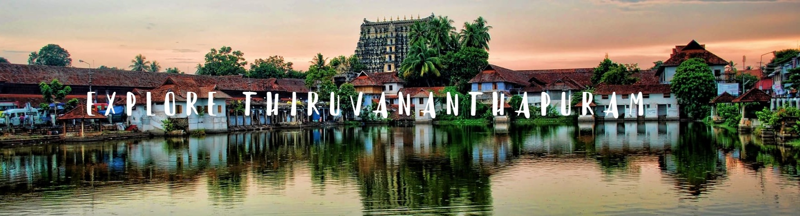

The temple is a beautiful example of Dravidian architecture featuring a gopuram. Plated in gold, it has a ubiquitous presence of stone carvings and murals. The deity Padmanabhaswamy is an avatar of Lord Vishnu and can be seen in a yogic sleep posture over the serpent Adi Shesha. The temple is known for the architectural expertise that one can see in the place. The idol of the deity, which is 18 feet high has to be viewed through three different doors. This is another example of the marvelous art that is presenet in places to visit in Trivandrum. Apart from the deity and the overwhelming handcrafts by the workers who have worked in the temple, another thing that enchants the tourists is the famous corridor which is supported by three hundred sixty-five and a quarter pillars! And to top it all, these all pillars are made of granite.
Ponmudi or The Golden Peak is a small hill station in Trivandrum. It is located at an altitude of 1100m and runs parallel to the Arabian Sea. It is a popular trekking spot with natural beauty scattered all over the place. The hills, Peppara Wildlife Sanctuary, Echo Point, valleys, Ponmudi waterfall and rivers attract tourists all around the year.The landscape of Ponmudi is an interspersing of valleys and hills with forestland and plantations. Ponmudi is having an extensive importance of biodiversity, which plays a major role in maintaining the ecological balance of the area.Another main attraction in the region is Agasthyarkoodam, one of the highest peaks in the Western Ghats, with the highest peak at 1868 m.
The Kovalam beach is one of the most famous beaches of the state. It is not a single beach, but consists of three different beaches. Each of these having its own scenic beauty and grandeur! It is located on the coast of the Arabian Sea and is among the most famous places to visit in Kerala. The beauty of the beach can be determined from the fact that it is called the Paradise of the South. With what one might recall an endless number of coconut trees on the sea bank. The beach is just 13 km from Trivandrum and is surely one of the best places to visit in Trivandrum. It must be known that people from across the world and also India travel to this place throughout the year.So, make sure that Kovalam is a part of your list when you are about to mark the sightseeing spots around Trivandrum.
Built in the Indo-Saracenic style, it is a unique combination of Mughal, Chinese and Italian styles. It was developed by the Maharaja of Travancore in 1855 and showcases precious artifacts, bronze articles, ivory ornaments, and carvings. It also has a chariot and ancient musical instruments on display. Sri Chitra Art Gallery present inside features fascinating paintings by Raja Ravi Varma.
You will not expect such sprawling greenery right in the middle of the city. The extensive complex that houses both the zoological park and Napier museum showcases Kerala’s rich cultural heritage. Built during the colonial era, the museum has an extensive collection of rare artifacts, idols, ivory carvings and ornaments
. This is one of the Places to visit in Thiruvananthapuram
Meenmutty falls is a picturesque spot located near the Neyyar Reservoir area. Ideal for trekkers, one needs to climb up about two kilometres through the dense Agasthyakoodam forests to reach the falls. Backpackers can trek further ahead to see the beautiful Kombaikani Falls that lie still upstream of the Meenmutty Falls. Nature is at its unspoiled best with minimal human intervention.
Located about thirty kilometers to the south of the city, Neyyar dam too is a very popular picnic spot. The blue lake and the gravity dam are the major attractions here. It is hard to resist the boat cruise through the calm blue waters. The adjacent Neyyar Wildlife Sanctuary is home to many wild animals. The crocodile breeding centre and the lion safari park are the other major tourist spots in the dam suburbs. This is a good Places to visit in Thiruvananthapuram
Poovaris a rare meeting point of lake, river and sea, this serene village is situated to the south of River Neyyar. Poovar beach separates the river from the Arabian Sea and hence its geographical importance. Poovar is relatively unexplored and thereby beach activities are minimal. The boat trip through the lagoon, enjoying the lush greenery on both sides, is an added attraction.The Vizhinjam Marine Aquarium, well-known for its unique Image Pearl production technique is located near Poovar.Ardent lovers of seafood should not give it a miss.
The Veli Tourist Village which lies where the Veli Lake meets the Arabian Sea provides for unique boating and picnicking opportunities. Visitors can hire pedal boats or paddleboats as per their convenience. One can also roam the gardens and have a nice picnic or choose to employ the boats for the entire duration of the trip. The view and feel of the place is extremely unique, considering it is merely 12 kms from the capital city of Thiruvananthapuram. Children are known to have a lot of fun climbing the sculptures here and the speedboat ride across the waters. A separate Children’s Park and Floating Cafe run by Kerala Tourism Development Corporation (KTDC) are added incentives to visit this unique village.